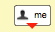

GAE_JAVA_HOME to
the install directory, e.g.
export GAE_JAVA_HOME=~/development/tools/appengine-java-sdk-1.6.1
belay/, station/,
buzzer/, emote/, and bfriendr/.
If you are on a Linux/Mac machine, the script run.sh in
the main directory of the repository can be used to start the demos.
Running this script without any parameters outlines how to use the script.
If the dev_appserver.py script provided by the Python variant of Google App E
ngine is on your path, then simply executing run.sh restart will
start all the necessary infrastructure for belay development along with the
demo applications:
google-belay$ ./run.sh restart Stopping belay... Stopping station... Stopping buzzer... Stopping emote... Stopping chat... Stopping bfriendr... Started belay, pid in /tmp/belay/pids/belay/pid, log in /tmp/belay/logs/belay, site at http://localhost:9000 Started station, pid in /tmp/belay/pids/station/pid, log in /tmp/belay/logs/station, site at http://localhost:9001 Started buzzer, pid in /tmp/belay/pids/buzzer/pid, log in /tmp/belay/logs/buzzer, site at http://localhost:9004 Started emote, pid in /tmp/belay/pids/emote/pid, log in /tmp/belay/logs/emote, site at http://localhost:9005 Started chat, pid in /tmp/belay/pids/chat/pid, log in /tmp/belay/logs/chat, site at http://localhost:9006 Started bfriendr, pid in /tmp/belay/pids/bfriendr/pid, log in /tmp/belay/logs/bfriendr, site at http://localhost:9009
Alternatively, the path to dev_appserver.py can be passed as the
first argument to run.sh. To get more information on using the
startup script and restarting, just run ./run.sh (with no
arguments).
On Windows machines, we recommend using Cygwin to allow the use of the same script.
Visit https://belay-station.appspot.com (or http://localhost:9001 when running a development instance) to enter Belay Station. The primary purpose of Belay Station is to hold references to the user's application instances. Stations can be created for a user either by logging in using an OpenID identity from Yahoo or AOL, or their Google+ identity. When you first launch Belay, this item list is empty.
It is currently a requirement that the user's station be open at all times while they are interacting with other Belay enabled applications. This constraint will be addressed in future versions of Belay.
Buzzer is a simple micro-blog web application, which demonstrates the ability to grant third parties with the ability to view the blog and to post to the blog on the user's behalf (but only while the user has their buzzer instance open). The live version can be found at https://belay-buzzer.appspot.com and the development version can be found at http://localhost:9004.
Emote is an emoticon-posting application that utilizes a capability
granted from a Buzzer instance. You can drag-and-drop the
 icon from a Buzzer instance onto an Emote
instance to give it the capability to post to that Buzzer. The live version
can be found at
https://belay-emote.appspot.com
and the development version can be found at http://localhost:9005.
icon from a Buzzer instance onto an Emote
instance to give it the capability to post to that Buzzer. The live version
can be found at
https://belay-emote.appspot.com
and the development version can be found at http://localhost:9005.
Bfriendr is an instant-messaging application that support sending capabilities as messages. The live version can be found at https://belay-bfriendr.appspot.com and the development version can be found at http://localhost:9009. Enter a name, etc. and click "get going". If you visit bfriendr (local development) again, you can re-launch your account, or create a new, independent account.
Drag the  icon from one bfriendr onto the invite pane of another bfriendr to introduce them to each other. These bfriendr's can send messages to each other that include capabilities.
In order to build the Java source code and demo applications, in addition
to the Java AppEngine SDK you will require Maven 3.x, which can be downloaded
here. On a Linux/Mac, one
can then just run make java from the root folder, or run
mvn install from within the Java folder. Additionally, Eclipse
can be used to build the code with the help of the
m2eclipse plugin.
{kind=link}